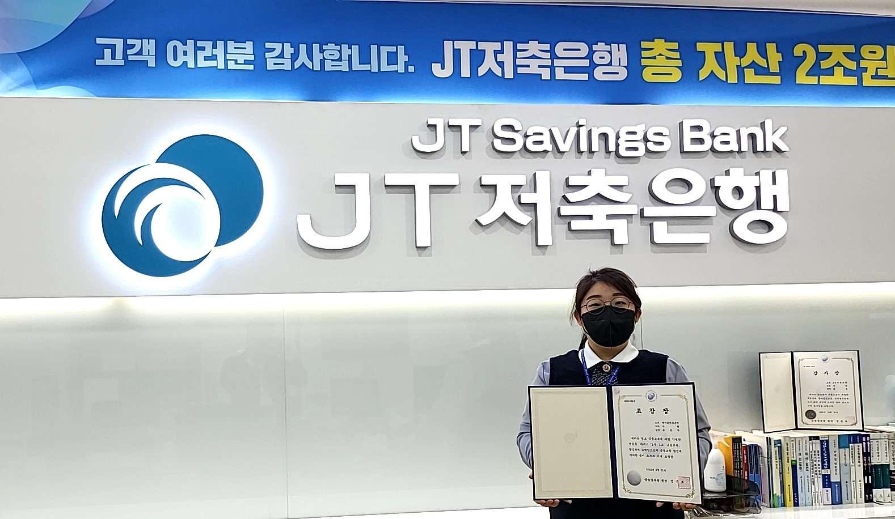
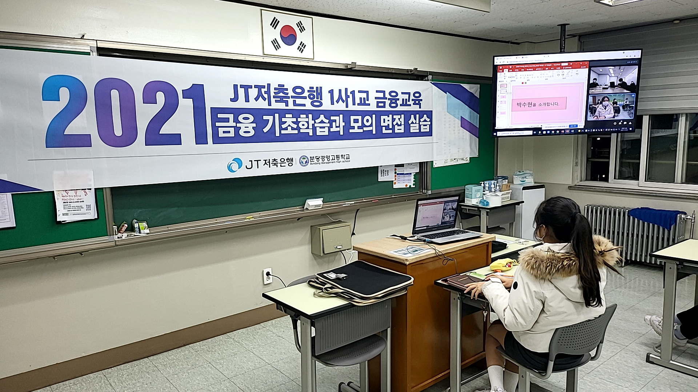

소비자보호 우수사례
JT저축은행은 금융상품의 공급자와 수요자 사이에 공정한 금융거래를 위하며 금융소비자의 권익을 보호하고자 금융소비자보호총괄책임자(CCO) 및 대표이사(CEO) 직속의 금융소비자보호 전담부서인 금융소비자보호팀을 조직 운영하고 있습니다.
JT저축은행의 금융소비자보호팀은 고객의 소리에 귀를 기울여 상품의 개발 및 판매, 서비스 개선에 금융소비자의 요구사항 등을 최대한 반영하며 고객 불만 및 취약한 금융소비자의 보호에 앞장서는 저축은행이 되도록 하겠습니다.
- 소비자보호 우수사례(2022년)
-
- 
1. JT저축은행, 금융교육 우수사례로 금융감독원장 표창 수상
-
■지난 2021년 12월 분당경영고 비대면 『1사1교 금융교육』 "금융 기초 학습과 모의 면접 실습"을 진행하였던 JT저축은행 본점영업점 유은지 사원이 2022년 3월, 금융감독원으로부터 1사1교 금융교육의 공로를 인정받아 금융감독원장 표창을 수상함
■2021년 5회 1사1교 교육에는 학생들이 금융권 취업 시 바로 적응할 수 있도록 수신 및 고객 응대 방법, 보이스피싱 금융 사기 예방법 등 금융 기초 교육을 실시
■금융권 취업 면접 요령, 면접 시 복장, 유의 사항, 자기소개서 첨삭 등 금융권 취업을 위한 실무 교육을 진행
- 소비자보호 우수사례(2022년)
-
2. 보이스피싱 피해예방 LMS 발송 안내(2022.01)
-
■최근 금융권 오픈 뱅킹이 보편화됨에 따라 보이스 피싱 등 금융범죄의 수단으로 활용이 되고 이와 관련된 민원사례가 발생되고 있어 고객의 금융피해를 사전 예방하고자 금융소비자보호 차원에서 안내 및 주의환기 필요
■2022년 1월 JT저축은행 여신 고객(신용대출, 햇살론) 약 37,500건 문자 발송
- 소비자보호 우수사례(2021년)
-
- 
1. 비대면 1사 1교 금융교육 실시 (2021.12)
- 당행과 관련된 업무처리에 대한 이의신청, 진정, 건의, 질의 및 기타 특정행위를 요하는 의사표시를 하는 것
-
■프로그램 목적
- JT저축은행과 자매결연 한 분당경영고 학생을 대상 금융권 취업 성공을 위한 금융 기초 학습 및 면접 노하우 전달
-
■교육 행사 개요
1)행사 일시 : 12월 01일(수), 12월 03일(금) 2일 간
2)참석 인원 : 분당경영고 학생 10명, 교사 2명, 본사 직원 7명(교육 강사 3인 포함)
3)장소 : JT저축은행 본사, 분당경영고 본관
- 소비자보호 우수사례(2021년)
-
-

2. 2021 아시아투데이 금융대상 저축은행 부문 고객 만족 최우수상 수상 (2021.09)
-
■JT저축은행이 종합일간지 아시아투데이(업계 30위권 내) 주최로 진행된 ‘2021 아시아투데이 금융대상’
- 우수한 평가를 받은 주요 공적은
-보이스피싱 실제 사례를 공론화해 업계의 금융 피해 예방 유도
-다양한 핀테크 기업과의 제휴로 혁신 금융 플랫폼을 확대해 고객 접근성 강화
-ESG 경영을 선도하여 친환경 경영은 물론 사회문제 개선에 앞장서는 부문을 높이 평가받음
-